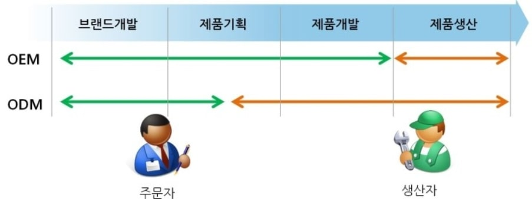
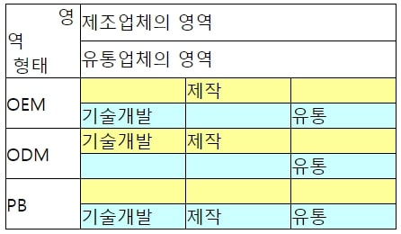

S: segmentation - 시장세분화
OEM (Original Equipment Manufacturing) – A,B 두 회사가 계약을 맺고 A사가 B사에 자사상품의 제조를 위탁하여, 그 제품을 A사의 브랜드로 판매하는 생산방식
ODM (Original Design Manufacturing)– OEM과 비슷 하지만, B사가 제품 개발까지 하는 경우.

PB (private brand)– B인 유통업체가 독자적으로 개발한 브랜드를 말한다. 하지만, A사의 브랜드로 판매한다.
